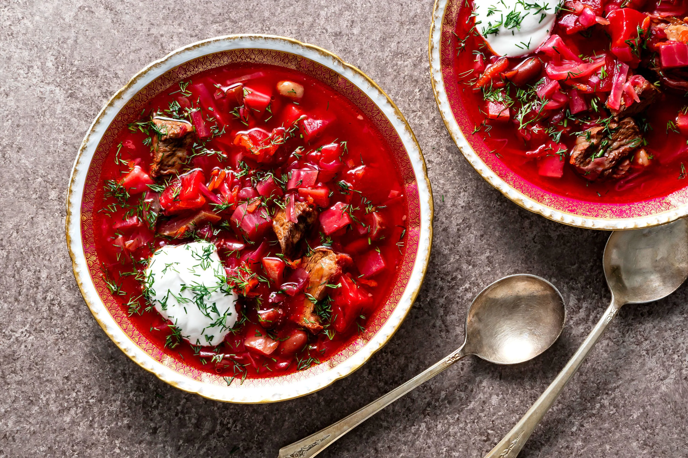

Ukrainian Borscht

What is Borscht?
Borscht is a sour soup that is traditionally made with meat stock and boiled vegetables. The Ukrainian version, which features beets, is perhaps the most well known type — but varieties of borscht can be found throughout Central and Eastern Europe and Northern Asia
Borscht Ingredients
These are the ingredients you'll need to make this top-rated borscht recipe:
- Sausage: This Ukrainian borscht recipe starts with a pound of pork sausage.
- Vegetables: You'll need beets, carrots, baking potatoes, cabbage, and an onion.
- Canned tomatoes: Use drained diced tomatoes and canned tomato paste.
- Vegetable oil: Cook the onion in oil.
- Water: You'll need almost nine cups of water for this big-batch soup.
- Garlic: Three cloves of garlic add bold flavor.
- Seasonings: Season the borscht with salt and pepper to taste.
- Sour cream: Top the borscht with sour cream.
- Fresh herbs: Garnish the soup with fresh parsley or dill.
How to Make Borscht?
You'll find the full, step-by-step recipe below — but here's a brief overview of what you can expect when you make Ukrainian borscht:
- Cook the sausage and set aside.
- Boil water, add the sausage, then add the vegetables and diced tomatoes.
- Cook the onion, stir in the tomato paste, and thin with water. Transfer to the pot.
- Add the garlic, cover, and turn off the heat. Stir in the seasonings.
- Ladle into bowls and garnish with sour cream and fresh herbs.